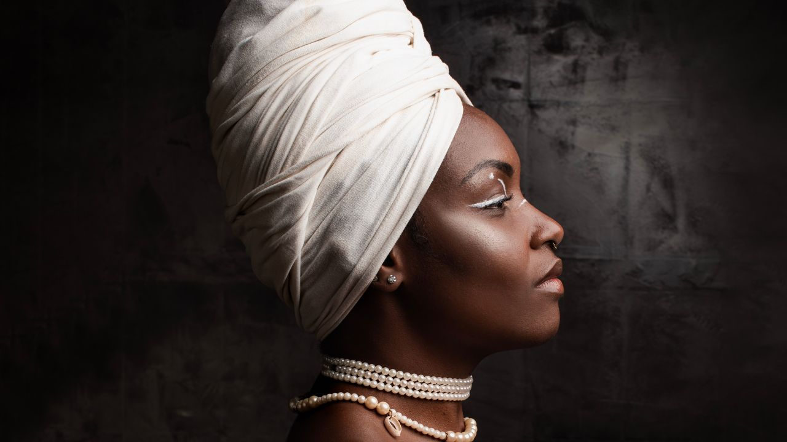

Musical Bertoleza, vencedor do APCA 2020, volta em temporada gratuita no Teatro Alfredo Mesquita

Espetáculo da Gargarejo Cia Teatral reabre em São Paulo de 20 de fevereiro a 1º de março de 2026 e reposiciona O Cortiço a partir de quem sempre sustentou a história: Bertoleza.
Sucesso de crítica e público desde a estreia em 2020 (quando levou o Prêmio APCA de Melhor Espetáculo do Ano), o musical Bertoleza ganha uma nova e curtíssima temporada gratuita no Teatro Alfredo Mesquita, em São Paulo. Com adaptação, direção e canções originais de Anderson Claudir — que assina a dramaturgia ao lado de Letícia Conde —, a montagem revisita o clássico naturalista de Aluísio Azevedo, mas desloca o centro da narrativa para Bertoleza, mulher negra e escravizada, peça-chave da trama e, aqui, protagonista.
Na história, o português João Romão propõe sociedade à escrava Bertoleza e promete comprar sua alforria. Juntos, constroem patrimônio, levantam o cortiço, o armazém e a pedreira. Quando a ambição de Romão aponta para um casamento “estratégico” com Zulmira, filha de um negociante recém-titulado barão, ele precisa se livrar de Bertoleza — justamente quem trabalha de sol a sol para sustentar o que foi construído a dois. O espetáculo transforma esse conflito em motor dramático e político, trazendo à tona as camadas de exploração, apagamento e violência estrutural.
A crítica destacou a potência dessa inversão de foco: “A personagem [Bertoleza] ganha no surpreendente espetáculo uma nova leitura…”, escreveu Dirceu Alves Jr. Já José Cetra (APCA) ressaltou o impacto emocional da encenação: “A entrega do elenco e as situações apresentadas são tão fortes que não há como não se envolver”.
Ao atualizar a narrativa do século 19 para friccionar relações do presente, a companhia também amplia o repertório de referências: em cena, surgem ecos e memórias de mulheres negras brasileiras historicamente negligenciadas, como Marielle Franco, Carolina Maria de Jesus, Antonieta de Barros, Maria Firmina dos Reis e Dandara, criando pontes entre vida, história e obra.
A protagonista Bertoleza é interpretada por Lu Campos, em um processo que ela descreve como atravessado por ancestralidade e missão de ruptura de ciclos de opressão. O elenco reúne ainda Ali Baraúna, Taciana Bastos, Roma Oliveira, Cainã Naira, Larissa Noel, Palomaris, Edson Teles, Thiago Mota e Welton Santos, com stand-ins Lilian Rocha e Anderson Claudir. Completam a equipe, entre outros, Eric Jorge (direção musical), Juliana Manczyk (preparação vocal e assistência musical), Eduardo Silva (preparação de elenco) e Taciana Bastos (preparação corporal e coreografia)
Serviço — Bertoleza (Gargarejo Cia Teatral)
Temporada: 20 de fevereiro a 1º de março de 2026
Sessões: sextas e sábados, 20h; domingos, 19h
Domingos: intérprete de Libras + roda de conversa
Local: Teatro Alfredo Mesquita — Av. Santos Dumont, 1770, Santana — São Paulo
Ingressos: gratuitos (retirada na bilheteria com 1h de antecedência)
Duração: 90 minutos
Recomendação etária: 12 anos
Acessibilidade: espaço com acesso para pessoas com mobilidade reduzida
Redes: Facebook @gargarejociateatral | Instagram @gargarejocia